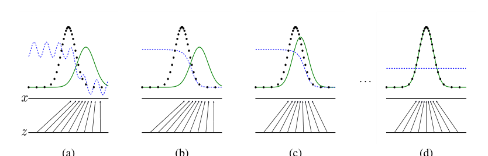
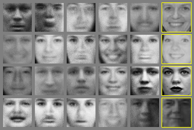

Generative Adversarial Nets

| Architecture Type | Adversarial Generative Framework |
|---|---|
| Key Innovation | Minimax game between a Generator and a Discriminator. |
| Performance Metric | Ability to generate sharp, realistic samples without explicit density estimation. |
| Computational Efficiency | Backpropagation-based training; no need for complex sampling during training. |
| Venue | Neural Information Processing Systems |
| Year | 2014 |
| Citations | 2328 |
| DOI | Link |
Generative Adversarial Nets (GANs) introduced a novel framework for estimating generative models via an adversarial process. By simultaneously training two models—a generator that captures the data distribution and a discriminator that estimates the probability that a sample came from the training data rather than the generator—this approach avoids the need for Markov chains or unrolling approximate inference networks. The resulting minimax game leads to a powerful method for generating high-quality, realistic data samples, which has since transformed the field of generative modeling.
The Adversarial Framework
The core idea of GANs is to frame generative modeling as a competition between two players. The **Generator ($G$)** takes a random noise vector as input and attempts to map it to the data space (e.g., an image). Its goal is to produce samples so realistic that they are indistinguishable from real training data.
The **Discriminator ($D$)** is a binary classifier that takes an input and outputs the probability that it came from the real dataset rather than from $G$. During training, $D$ is optimized to correctly label real and fake samples, while $G$ is optimized to maximize the probability of $D$ making a mistake. This competition drives both models to improve until $G$ produces highly realistic samples.
The Minimax Objective Function
The training process is defined by a value function $V(D, G)$, which represents a minimax game. $D$ tries to maximize the log-likelihood of correctly identifying real and fake data, while $G$ tries to minimize the log-probability that $D$ identifies its samples as fake.
In practice, especially early in training, the generator may be so poor that the discriminator can reject samples with high confidence. To address this, the authors suggest a non-saturating objective for the generator: instead of minimizing $\log(1 - D(G(z)))$, the generator can be trained to maximize $\log D(G(z))$. This provides stronger gradients for the generator when its performance is low.
Theoretical Convergence
The paper provides a theoretical proof that if $G$ and $D$ have enough capacity, there exists a unique solution where $G$ perfectly recovers the data distribution and $D$ is equal to $1/2$ everywhere (meaning it can no longer distinguish between real and fake samples).
This equilibrium point corresponds to the global minimum of the Jensen-Shannon divergence between the model's distribution and the true data distribution. While reaching this global optimum is challenging in practice due to the non-convex nature of neural network optimization, the framework provides a solid mathematical foundation for adversarial training.
Advantages and Limitations
GANs offer several advantages over previous generative models like Boltzmann machines or Variational Autoencoders (VAEs). They do not require an explicit probability density function, avoiding the need for complex approximate inference or Markov chain sampling. Furthermore, they tend to produce sharper, more detailed images compared to the often-blurry outputs of VAEs.
However, GANs are notoriously difficult to train. Issues such as 'mode collapse' (where the generator produces a limited variety of samples) and training instability require careful hyperparameter tuning and architectural choices. Despite these challenges, the GAN framework has inspired thousands of variations and applications in art, science, and industry.
Concept Breakdown
A neural network that learns to create fake data from a latent noise vector, aiming to mimic the real data distribution.
A neural network that acts as a judge, learning to distinguish between real data and the fake data produced by the generator.
A mathematical framework where one player tries to maximize their gain while the other tries to minimize it, leading to a competitive equilibrium.
A measure of similarity between two probability distributions, which the GAN objective implicitly minimizes.
The low-dimensional space of random noise (z) that serves as the input to the generator.
Mathematics
Minimax Value Function
| Symbol | Meaning |
|---|---|
| $D(x)$ | Discriminator's probability that real sample x is real |
| $G(z)$ | Generator's output for noise vector z |
| $D(G(z))$ | Discriminator's probability that generated sample G(z) is real |
Figures and Explanations

Visual representation of the adversarial training process, showing how the generator's distribution (green) eventually aligns with the data distribution (black) as the discriminator (blue) reaches an equilibrium of 0.5.

See Also
References
- InfoGAN: Interpretable Representation Learning by Information Maximizing Generative Adversarial Nets - Xi Chen, Yan Duan et al. (2016)
- A Role for Fragment-Based Drug Design in Developing Novel Lead Compounds for Central Nervous System Targets - Michael J. Wasko, Kendy A. Pellegrene et al. (2015)
- Molecular Docking and Structure-Based Drug Design Strategies - L. Ferreira, Ricardo N Dos Santos et al. (2015)
- Neural Variational Inference and Learning in Belief Networks - A. Mnih, Karol Gregor (2014)
- Stochastic Backpropagation and Approximate Inference in Deep Generative Models - Danilo Jimenez Rezende, S. Mohamed et al. (2014)
- Intriguing properties of neural networks - Christian Szegedy, Wojciech Zaremba et al. (2013)
- Auto-Encoding Variational Bayes - Diederik P. Kingma, M. Welling (2013)
- Multi-Prediction Deep Boltzmann Machines - I. Goodfellow, Mehdi Mirza et al. (2013)
- Deep AutoRegressive Networks - Karol Gregor, Ivo Danihelka et al. (2013)
- Pylearn2: a machine learning research library - I. Goodfellow, David Warde-Farley et al. (2013)
- Deep Generative Stochastic Networks Trainable by Backprop - Yoshua Bengio, Eric Thibodeau-Laufer et al. (2013)
- Generalized Denoising Auto-Encoders as Generative Models - Yoshua Bengio, L. Yao et al. (2013)
- Maxout Networks - I. Goodfellow, David Warde-Farley et al. (2013)
- ImageNet classification with deep convolutional neural networks - A. Krizhevsky, I. Sutskever et al. (2012)
- Theano: new features and speed improvements - Frédéric Bastien, Pascal Lamblin et al. (2012)
- Deep Neural Networks for Acoustic Modeling in Speech Recognition - Geoffrey E. Hinton, L. Deng et al. (2012)
- Better Mixing via Deep Representations - Yoshua Bengio, Grégoire Mesnil et al. (2012)
- Improving neural networks by preventing co-adaptation of feature detectors - Geoffrey E. Hinton, Nitish Srivastava et al. (2012)
- A Generative Process for Contractive Auto-Encoders - Salah Rifai, Yoshua Bengio et al. (2012)
- Quickly Generating Representative Samples from an RBM-Derived Process - Olivier Breuleux, Yoshua Bengio et al. (2011)